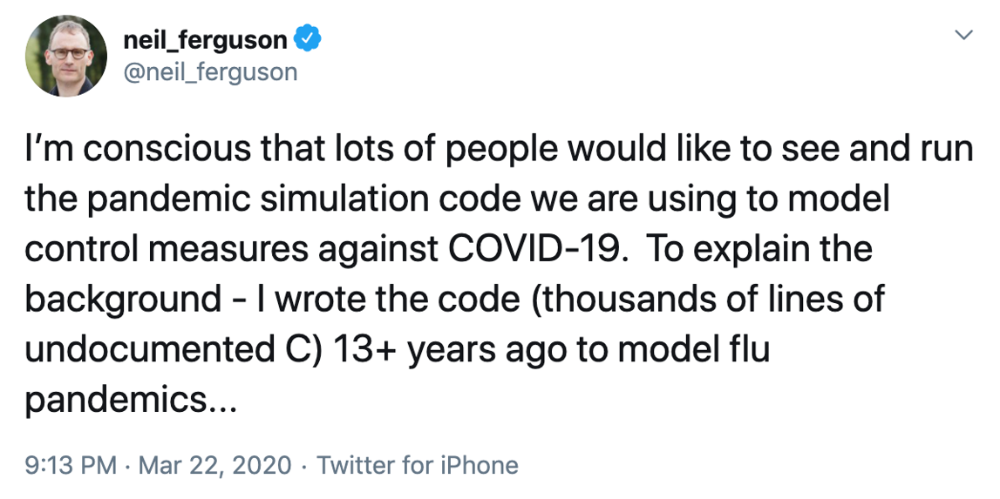

Code and Software#
- Describe what is research software and its purposes
- Decompose a workflow into identifiable components
- Know when to separate a script into several functions
- Write code that is easy to run by others by including all dependencies, requirements, documentation, and examples
- What is research code and software?
- What can you do to make code usable and reusable?
- What are the characteristics of readable code?
What your future self may think…#
{alt=”A tweet from Neil Ferguson, posted on March 22nd 2020. It reads ‘I’m conscious that lots of people would like to see and run the pandemic simulation code we are using to model control measures against COVID-19. To explain the background — I wrote the code (thousands of lines on undocumented C) 13 plus years ago to model flu pandemics…’”}
The twitter thread illustrates a real example of research software problems, from Prof. Neil Ferguson. In that case, the research software written for one purpose was suddenly in high demand, for important public health reasons, over a decade later. And that software was hard for others to use.
Smaller-scale versions of this problem are more common:
you want to re-run a data analysis that you did six months ago
a new post-doc starts working on a related project and needs to adapt your analysis to a new dataset
you publish a paper, and a masters student from the other side of the world emails you to reproduce the results for their project
What is research code and software?#
There are many different shapes and sizes of research software:
Any code that runs in order to process your research data.
A record of all the steps used to process your data (scripts and workflow such data analysis are software).
R, Python, MATLAB, unix shell, OpenRefine, ImageJ, etc. are all scriptable. So are Microsoft Excel macros.
Standalone programs or scripts that do particular research tasks are also research software.
There are extended discussions about research software at the Software Sustainability Institute.
## Potential problems writing code
**Discussion**
What can go wrong with writing research code?
::::::::::::::: solution
## Suggestions
- I don't remember what this code does
- I don't remember why I made this choice
- This code doesn't work any more
- This code doesn't work on an updated version of my dataset
- This code doesn't work on a different computing system
- I'm not sure if this calculation is correct
:::::::::::::::::::::::::
If you or your group are creating ten thousands lines of code for use by hundreds of people you have never met, you are doing software engineering. If you’re writing a few dozen lines now and again, and are probably going to be its only user, you may not be doing engineering, but you can still make things easier on yourself by adopting a few key engineering practices. What’s more, adopting these practices will make it easier for other people and your future self to understand and (re)use your code.
The core realization in these practices is that readable, reusable, and testable are all side effects of writing modular code, i.e., of building programs out of short, single-purpose functions with clearly-defined inputs and outputs [hunt1999]. Much has been written on this topic, and this section focuses on practices that best balance ease of use with benefit for you and collaborators.
Programs themselves are modular, and can be written in scripts that run a clearly-defined set of functions on defined inputs.
Place a brief explanatory comment at the start of every script or program#
Short is fine; always include at least one example of how the program is used. Remember, a good example is worth a thousand words. Where possible, the comment should also indicate reasonable values for parameters like in this example.
Synthesize image files for testing circularity estimation algorithm.
Usage: make_images.py -f fuzzing -n flaws -o output -s seed -v -w size
where:
-f fuzzing = fuzzing range of blobs (typically 0.0-0.2)
-n flaws = p(success) for geometric distribution of # flaws/sample (e.g. 0.5-0.8)
-o output = name of output file
-s seed = random number generator seed (large integer)
-v = verbose
-w size = image width/height in pixels (typically 480-800)
-h = show help message
The reader doesn’t need to know what all these words mean for a comment to be useful. This comment tells the reader what words they need to look up: fuzzing, blobs, and so on.
## Writing helpful explanatory comments
**Multiple Choice**
An example function `GetData` reads in data files of a particular type.
Which of the following should be included in an explanatory comment for this function?
## Options
- "this function reads a file"
- file name
- file type
- output type
- date
- function author
- function version
- data columns or other properties
- expected file path / address (for example a specific directory or web address)
- all of the above
::::::::::::::: solution
## Solution
- file type - it is good to know what the function is tailored to process
- output type - it is good to know how to integrate a function in a workflow
- data columns or other properties - it is good to know the internal structure of the data
- expected file path / address (for example a specific directory or web address) - it is good to know the origin to evaluate the validity of the data
:::::::::::::::::::::::::
Decompose programs into functions#
A function is a reusable section of software that can be treated as a black box by the rest of the program. This is like the way we combine actions in everyday life. Suppose that it is teatime. You could get a teabag, put the teabag in a mug, boil the kettle, pour the boiling water into the mug, wait 3 minutes for the tea to brew, remove the teabag, and add milk if desired. It is much easier to think of this as a single function, “make a cup of tea”.
Software programming languages also allow you to combine many steps into a single function. The syntax for creating functions depends on programming language, but generally you:
name the function
list its input parameters
describe what information it produces
write some lines of code that produce the desired output.
Good functions should have only one main task: for example, “make a cup of tea” does not also specify how to make a sandwich. Functions can also be built up from other functions: for example, “boil the kettle” involves checking if there is water in the kettle, filling the kettle if not, and then turning the kettle on. Having one main task means that functions should take no more than five or six input parameters and should not reference outside information. Functions should be no more than one page (about 60 lines) long: you should be able to see the entire function in a standard (~10pt) font on a laptop screen. If your function grows larger than this, it is usually best to break that up into simpler functions.
The key motivation here is to fit the program into the most limited memory of all: ours. Human short-term memory is famously incapable of holding more than about seven items at once [miller1956]. If we are to understand what our software is doing, we must break it into chunks that obey this limit, then create programs by combining these chunks. Putting code into functions also makes it easier to test and troubleshoot when things go wrong.
Pseudocode is a plain language description of code or analysis steps. Writing pseudocode can be useful to think through the logic of your analysis, and how to decompose it into functions.
The “make a cup of tea” example above might look like this:
make_cup_of_tea = function(sugar, milk)
if kettle is not full
fill kettle
boil kettle
put teabag in cup
add water from kettle to cup
wait 2 minutes
if sugar is true
add sugar to cup
if milk is true
add milk to cup
stir with spoon
return cup
## Using pseudocode
In this scenario, you're managing fruit production on a set of islands. You have written a pseudocode function
that tells you how to count how much fruit of a particular type is available to harvest on a given island.
```source
count_fruit_on_island = function(fruit type, island)
total fruit = 0
for every tree of fruit type on the island
total fruit = total fruit + number of fruit on tree
end for loop
return total fruit
```
Write the commands to call this function to count how many coconuts there are on Sam's island, how many cherries
there are on Sam's island, and how many cherries there are on Charlie's island.
Write a pseudocode for loop like the one above that uses this function to count all the cherries on every island.
::::::::::::::: solution
## Solution
```source
sams coconuts = count_fruit_on_island(coconuts, Sam's island)
sams cherries = count_fruit_on_island(cherries, Sam's island)
charlies cherries = count_fruit_on_island(cherries, Charlie's island)
```
To count all the cherries on every island:
```source
total cherries = 0
for every island
total cherries = total cherries + count_fruit_on_island(cherries, island)
end for loop
print "There are " + total cherries + " cherries on all the islands"
```
:::::::::::::::::::::::::
Be ruthless about eliminating duplication#
Write and re-use
functions instead of copying and pasting code, and use data
structures like lists instead of creating many closely-related
variables, e.g. create score = (1, 2, 3) rather than score1,
score2, and score3.
Also look for well-maintained libraries that already do what you’re trying to do. All programming languages have libraries that you can import and use in your code. This is code that people have already written and made available for distribution that have a particular function. For instance, there are libraries for statistics, modeling, mapping and many more. Many languages catalog the libraries in a centralized source, for instance R has CRAN, Python has PyPI, and so on. So always search for well-maintained software libraries that do what you need before writing new code yourself, but test libraries before relying on them.
Give functions and variables meaningful names#
Meaningful names for functions and variables document their purpose and make the program generally easy to read. As a rule of thumb,
the greater the scope of a variable, the more informative its name
should be: while it’s acceptable to call the counter variable in a
loop i or j, things that are re-used often, such as the major
data structures in a program should not have one-letter names.
## Name that function
An example function is defined in the format `functionName (variableName)`
This function cubes every third number in a sequence.
What are the most meaningful names for `functionName` and `variableName`? Choose one from each of the following sections:
`functionName`
1. processFunction
2. computeCubesOfThird
3. cubeEveryThirdNumberInASequence
4. cubeEachThird
5. 3rdCubed
`variableName`
1. arrayOfNumbersToBeCubed
2. input
3. numericSequence
4. S
::::::::::::::: solution
## Solution
`functionName`
1. processFunction - incorrect, too vague
2. computeCubesOfThird - incorrect, doesn't imply every third in sequence
3. cubeEveryThirdNumberInASequence - incorrect, too long
4. **cubeEachThird - correct, short and includes information on the data and calculation performed**
5. 3rdCubed - incorrect, bad practice to put a number at the beginning of a function name (and not allowed by some programming languages)
`variableName`
1. arrayOfNumbersToBeCubed - incorrect, too long
2. input - incorrect, too vague
3. **numericSequence - correct, short and included information about the type of input**
4. S - incorrect, too vague
:::::::::::::::::::::::::
## Language style guides
Remember to follow each language's conventions for names, such as
`net_charge` for Python and `NetCharge` for Java.
These conventions are often described in "style guides",
and can even be checked automatically.
**Tab Completion**
Almost all modern text editors provide *tab completion*, so that
typing the first part of a variable name and then pressing the tab
key inserts the completed name of the variable. Employing this
means that meaningful longer variable names are no harder to type
than terse abbreviations.
Make dependencies and requirements explicit.#
This is usually done on
a per-project rather than per-program basis, i.e., by adding a file
called something like requirements.txt to the root directory of
the project, or by adding a “Getting Started” section to the
README file.
Do not comment and uncomment sections of code to control a program’s behavior#
This is error prone and makes it difficult or impossible to
automate analyses. Instead, put if/else statements in the program to
control what it does, and use input arguments on the command line to select particular behaviour. For example, including the input argument --option and corresponding if/else statements to control running an optional piece of the program. Remember to use descriptive names for input arguments.
Provide a simple example or test data set#
Users (including yourself) can run your program on this set to determine whether it is working and whether it gives a known correct output for a simple known input. Such a test is particularly helpful when supposedly-innocent changes are being made to the program, or when it has to run on several different machines, e.g., the developer’s laptop and the department’s cluster. This type of test is called an integration test.
Code can be managed like data#
Your code is like your data and also needs to be managed, backed up, and shared.
Your software is as much a product of your research as your papers, and should be as easy for people to credit. Submit code to a reputable DOI-issuing repository, just as you do with data. DOIs for software are provided by Figshare and Zenodo, for example. Both Figshare and Zenodo integrate directly with GitHub.
## Attribution
This episode was adapted from and includes material from Wilson et al.
[Good Enough Practices for Scientific Computing](https://github.com/swcarpentry/good-enough-practices-in-scientific-computing).
- Any code that runs on your research data is research software
- Write your code to be read by other people, including future you
- Decompose your code into modules: scripts and functions, with meaningful names
- Be explicit about requirements and dependencies such as input files, arguments and expected behaviour
Attribution#
This lesson was adapted from and includes material from Wilson et al. Good Enough Practices for Scientific Computing and the SWC Incubator Module Good Enough Practices in Scientific Computing.